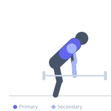
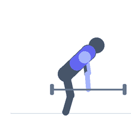

Exercise guide / Fat Bar Bent-Over Row
Fat Bar Bent-Over Row
A barbell bent-over row performed with a thick-diameter bar (fat bar or axle bar, typically 2-inch diameter versus the standard 1-inch). The increased diameter forces the hands to remain in a more neutral, open grip position and dramatically increases the demand on the forearm flexors and grip musculature to maintain hold of the bar throughout the row. The back and lat mechanics are identical to a standard bent-over row, but the grip limitation often becomes the performance-limiting factor. Used in grip-strength development programs, strongman training, and as a plateau-breaking variation for intermediate lifters.
Primary muscles
latissimus dorsi
rhomboid major
Secondary muscles
trapezius middle
deltoid posterior
biceps brachii long head
flexor carpi radialis
Stabilizers
erector spinae
Equipment
Standard Barbell


Starting position
- Load a fat bar or axle bar and position it on the floor or in a rack at a pulling height. Hinge at the hips to 45-70 degrees torso inclination with the bar hanging at arm's length.
Setup
- No straps — the entire point of the fat bar variation is grip development. Expect to use less weight than a standard barbell row. The thicker bar requires a more open hand position.
Steps
- Step 1: Grip the fat bar with an overhand or underhand grip, hands just outside hip width. Hinge to the rowing position with a neutral spine.
- Step 2: Row the bar toward the lower sternum or navel by driving the elbows back and squeezing the shoulder blades.
- Step 3: Hold at the top of the row for 1 second, feeling the lats and mid-back contract.
- Step 4: Lower the bar under control to full arm extension. Maintain a firm grip throughout.
Coaching cues
- Squeeze the bar as hard as possible — the fat diameter requires maximum grip tension
- Lead with the elbows, not the hands
- Think chest to the bar, not bar to the chest — keep the torso still
Breathing
- Brace the core and inhale before initiating the row. Exhale forcefully at the top. Inhale as you lower the bar.
Range of motion
- Full elbow extension at the bottom. Bar touches or nearly touches the torso at the top.
Tempo
- 1s pull, 1s hold at top, 3s controlled eccentric.
Common mistakes
- Using straps — this negates the purpose of the fat bar
- Gripping with just the fingers instead of the full hand — wrap the whole hand around the bar
- Rounding the lower back due to the grip failing — reduce weight before this occurs
Safety
- The grip will fatigue faster than the back — stop the set when grip fails rather than compromising spinal position
- Ensure the bar has consistent knurling or texture to maintain grip safety
Training
- strength: 3–6 reps
- hypertrophy: 6–10 reps
- strength: 3–5 sets
- hypertrophy: 3–4 sets
- Rest: {'strength': 180, 'hypertrophy': 90}